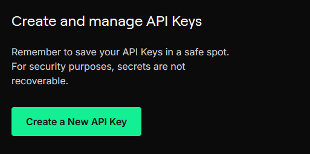
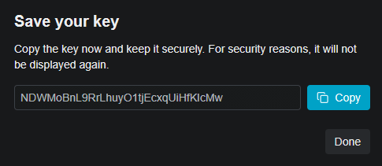

转写提供商
AssemblyAI
用途：带词级时间信息的语音识别。
1 访问 https://www.assemblyai.com/dashboard/signup 并创建账户（电子邮件或 SSO）。无需信用卡；新账户可获得约 $50 的免费额度（约 330 小时）。

2 验证邮箱后，在左侧边栏中打开 Manage ▸ API Keys。

3 AssemblyAI 会为该项目生成一个 Default API Key。可以复制该密钥；如果需要专用于 SubVox Pro 的密钥，可以点击 Create new API key。

4 如果创建新密钥，为其设置一个易于识别的名称，例如 SubVoxPro 或项目名称，然后点击 Create。

5 从密钥所在的表格行中复制 API 密钥。

6 将其粘贴到 SubVox Pro 中（Settings ▸ AssemblyAI）。
免费账户上限为 2 个项目 / 2 个 API 密钥，这对 SubVox Pro 来说已经绰绰有余。帮助文章：https://support.assemblyai.com/articles/7562135267-how-to-get-your-api-key
Gladia
用途：语音识别。
1 在 https://app.gladia.io 注册（邮箱或 Google 账号）。

2 登录后，在左侧边栏中打开 API Keys。Gladia 会在此处列出与账户关联的所有密钥。

3 如果想为 SubVox Pro 创建专用密钥，填写创建表单，并设置一个易于识别的名称，例如 SubVoxPro 或项目名称。

创建完成后，从列表中复制该密钥。Gladia 之后可能只显示密钥的部分内容，因此趁还能获取完整令牌时立即复制。

4 将其粘贴到 SubVox Pro 中（Settings ▸ Gladia）。
免费套餐：每月 10 小时转写（每小时最多 20 次 API 调用，最多 3 个并发任务）。帮助：https://support.gladia.io/article/how-to-get-the-api-key-from-my-account
Deepgram
用途：语音识别。
1 在 https://console.deepgram.com/signup 注册账户。无需信用卡，即可获得 $200 免费额度（注册后 1 年内有效）。

2 在控制台中，从左侧边栏打开 API Keys。

3 点击 Create a New API Key。

4 为密钥设置一个易于识别的名称。在 Set expiration 中，选择适合工作流程的时长；SubVox Pro 并不要求密钥具有特定的有效期。

5 复制生成的密钥并将其保存在安全的地方。Deepgram 无法再次显示此密钥。

6 将其粘贴到 SubVox Pro 中（Settings ▸ Deepgram）。
Speechmatics
用途：语音识别。
1 访问 Speechmatics Portal（https://portal.speechmatics.com），并创建一个账户。免费套餐提供一次性 $100 免费额度，无需绑定信用卡。

2 在项目侧边栏中，打开 Manage ▸ API Keys。

3 点击 Create new key。

4 为密钥设置一个易于识别的名称，然后点击 Generate new key。

5 在关闭对话框前复制该密钥。出于安全考虑，Speechmatics 不会再次显示该密钥。

6 将其粘贴到 SubVox Pro 中（Settings ▸ Speechmatics）。
ElevenLabs
用途：语音识别（ElevenLabs Scribe）和语音合成配音。
1 在 https://elevenlabs.io 注册（电子邮件或 SSO）。无需信用卡；免费套餐包含少量月度配额（约 10 分钟）。免费套餐仅限非商业用途，且需注明使用了 ElevenLabs：为发布的游戏进行配音需要付费套餐。

2 登录后，从左侧边栏打开 Developers。ElevenLabs 将 API 访问、日志、Webhook 和环境变量集中在此处。

3 在 Developers 页面中，选择 API Keys 选项卡，然后点击 Create Key。

4 为密钥设置一个易于识别的名称。如果启用了 Restrict Key，确保 Speech to Text 和 Text to Speech 均设置为 Access。SubVox Pro 使用 Scribe 进行转写，并在生成配音音频时使用 Text-to-Speech API。


5 在关闭对话框前复制生成的 API 密钥。ElevenLabs 仅会显示一次完整值。

6 将其粘贴到 SubVox Pro 中（Settings ▸ ElevenLabs）。ElevenLabs 转写和 ElevenLabs TTS 配音均使用同一令牌。
API 参考：Text-to-Speech 端点使用
xi-api-keyHTTP 请求头，并通过POST /v1/text-to-speech/:voice_id将文本转换为语音：https://elevenlabs.io/docs/api-reference/text-to-speech/convert
Rev AI
用途：语音识别。
1 在 https://www.rev.ai/auth/signup 注册。无需信用卡；可获得 5 小时免费额度。

2 访问 Access Token 页面（https://www.rev.ai/access_token）。也可以通过左侧导航栏中的 Access Token 进入该页面。

3 如果尚无令牌，在 Access Token 页面上点击 Generate。Rev AI 允许同时拥有最多两个有效令牌。

4 立即复制生成的令牌。Rev AI 仅显示一次完整值；此后，列表中将仅保留简短的预览和创建日期。

5 将其粘贴到 SubVox Pro 中（Settings ▸ Rev AI）。